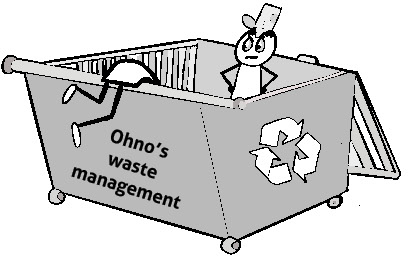
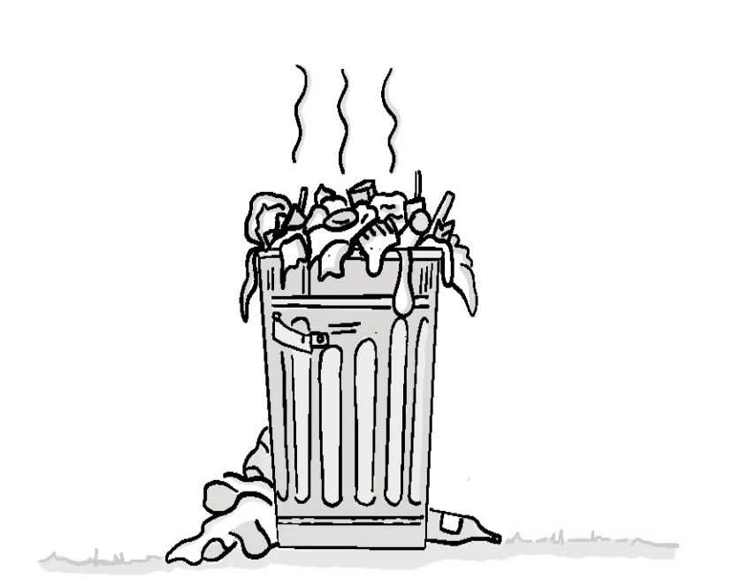
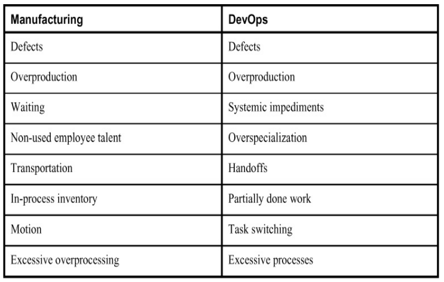
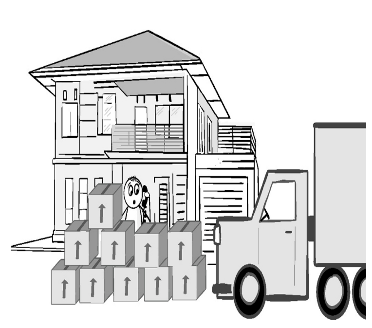
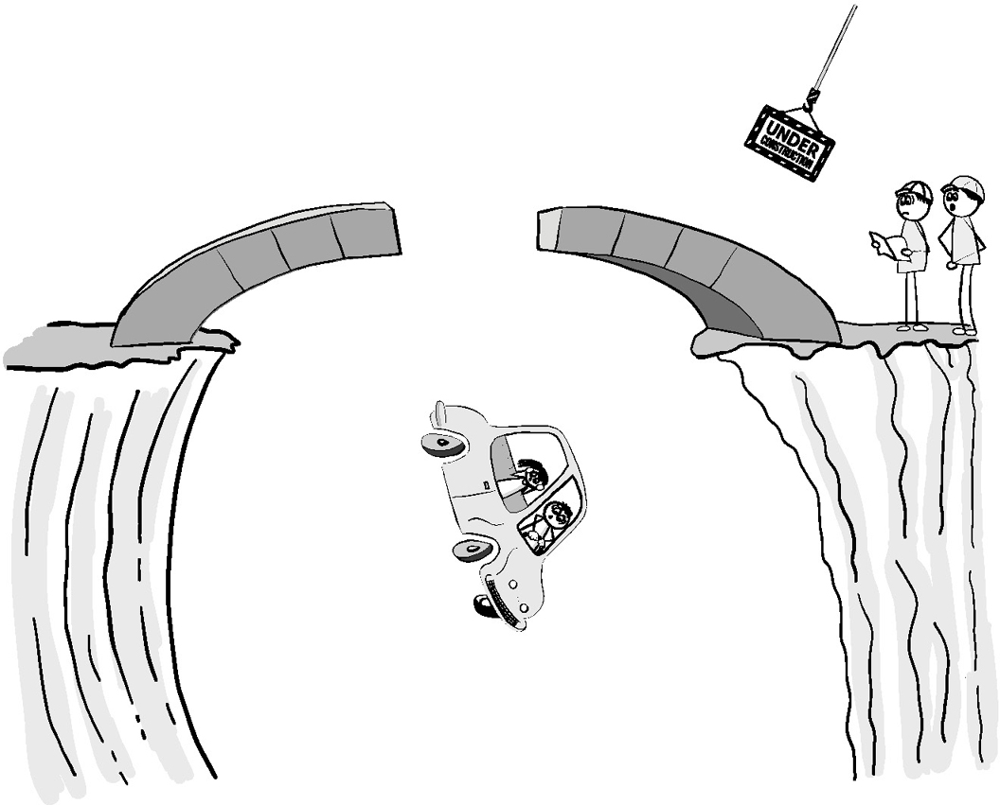
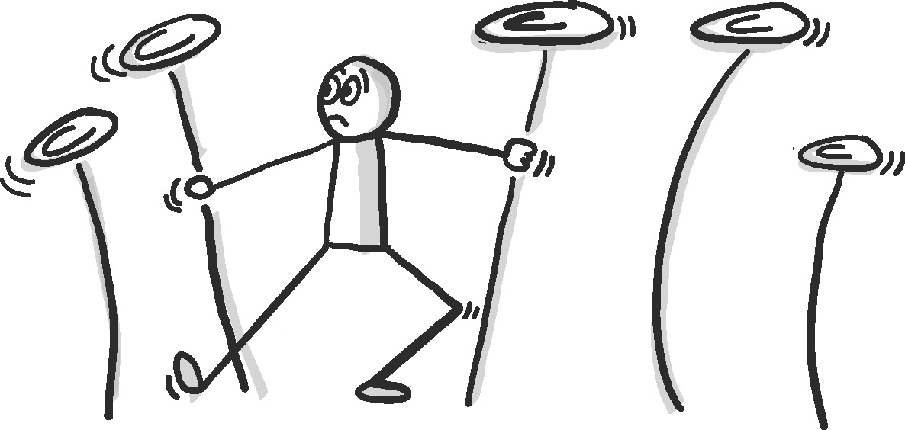
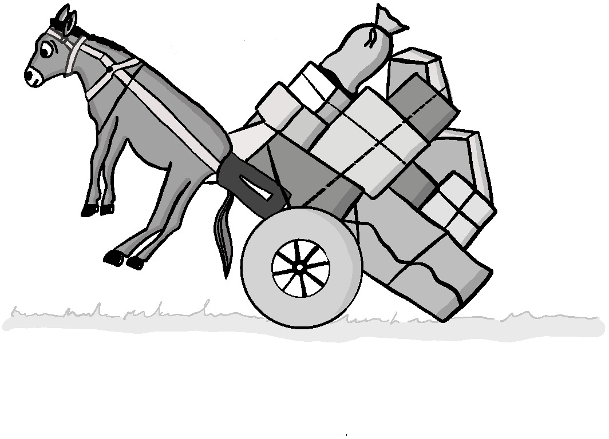
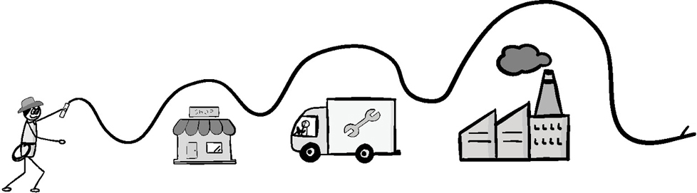
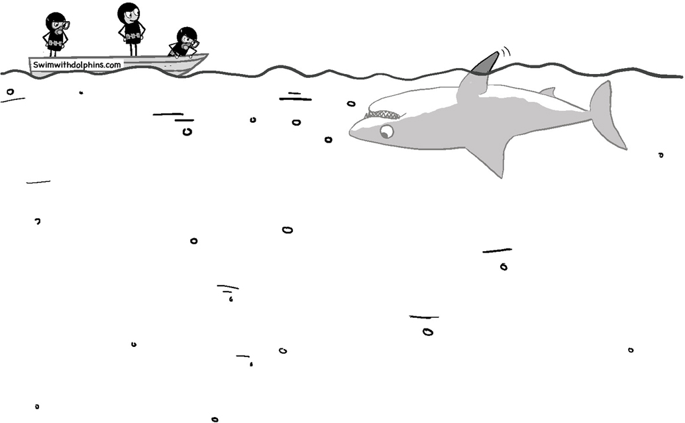

Сложности
В организациях естественным образом происходят только три вещи: сложности, путаница и неэффективная работа. Все остальное требует лидерства.
— Питер Дракер
Когда речь заходит о предоставлении услуг, большинство из нас приравнивает трение к тем элементами, которые препятствуют скорости и пропускной способности нашей доставки. Именно это заставляет многих из нас автоматизировать сборку и развертывание, приобретать облачные сервисы и внедрять различные Agile-практики. Однако столь узкое представление о трении может привести нас к неоптимизации или, что еще хуже, к упущению всего остального, что стоит на пути на пути к достижению желаемых результатов.
Для Джона Бойда и Гельмута фон Мольтке, о которых говорилось в двух предыдущих главах, трение — это то, что ухудшает нашу ситуационную осведомленность и препятствует обучению. Теория энергетической маневренности (ЭМ) Бойда доказывала, что даже если вы быстрее и способнее, чем ваш противник, вы все равно можете потерпеть неудачу, если не будете достаточно адаптироваться к изменяющимся условиям или эффективно включать обучение на протяжении всего пути.
Бережливое производство заводит трение еще дальше. В сфере предоставления продуктов и услуг специалисты по бережливому производству отмечают, что вы можете преуспеть в поставке и все же потерпеть неудачу, если вы менее эффективны, чем конкуренты, в оказании помощи вашему клиенту в достижении желаемого результата. Чтобы избежать этого, члены команды в бережливых организациях знают, что необходимо прямо искать и пытаться устранить все, что мешает или не добавляет напрямую ценности, которую может воспринять клиент, и объявляют это упущениями.
Для Тайити Оно, которому приписывают создание производственной системы Toyota, упущения имеют три формы: чистые отходы (muda), перегруженность (muri) и нерегулярность (mura).
Сила этого подхода в том, что он заставляет нас открыто ставить под сомнение все, что мы делаем, под углом зрения того, как это способствует достижению целевого результата. Идея быстрого устранения трения и упущений напоминает нам, что важно не то, насколько быстро вы можете двигаться, а то, насколько далеко вы можете продвинуться к целевому результату. Такой иной взгляд на доставку заставляет нас бросить вызов статус-кво, заставляя нас постоянно экспериментировать, учиться и совершенствоваться, чтобы чтобы лучше достигать этих результатов.
Понимание форм расточительства по методу Оно

Рисунок 4.1
Бережливое производство и идея целенаправленной борьбы с растратами возникли в рамках программы правительства США «Обучение в промышленности»1, которая была разработана для повышения производительности военного производства и преодоления нехватки рабочей силы во время Второй мировой войны. Один из ее наиболее ценных компонентов, «Методы работы» (МР), был направлен на сокращение отходов путем непрерывного совершенствования.
Работников, использующих МР, стимулировали постоянно искать пути улучшения методы, которые используются для выполнения работы, думая о том, почему они необходимы и как они способствуют реализации замысла, лежащего в основе работы. Были ли ненужные шаги или детали, которые можно устранить? Можно ли перегруппировать или упростить шаги, чтобы свести к минимуму количество ошибок или уменьшить время, необходимое для выполнения работы? Предложившие улучшения работники были отмечены и поощрялись к к широкому распространению этих улучшений.
Эти идеи были привезены в Японию генералом армии США Дугласом Макартуром, верховным главнокомандующим союзных держав в Японии после поражения Японии во Второй мировой войне. Он отвечал за процесс восстановления после войны и стремился найти способы ускорить его, чтобы улучшить условия жизни японских граждан. Одним из первых последователей этого подхода был Тайичи Оно, руководитель завода, а позже вице-президент Тойота. Ему нужен был способ помочь своей, испытывающей трудности, компании соперничать с конкурентами, обладающими богатыми ресурсами, такими как General Motors (GM).
Тайичи Оно донес эти идеи до всех сотрудников компании, от простого рабочего до руководителя высшего звена. Чтобы привлечь всех желающих участвовать в поиске пути постоянного совершенствования, он должен был побудить их изменить отношение к своей работе. Вместо того чтобы просто следовать инструкциям, работники должны были непрерывно и критически изучать все, что связано с внедрением улучшений. Все, что либо мешает внедрению улучшений, либо не вносит непосредственного вклада в удовлетворения потребностей клиента, должно рассматриваться как форма отходов, которые необходимо устранить.
Тайичи Оно и команда Тойоты обнаружили, что отходы могут принимать различные формы. Знакомство с этими типами и их влиянием может помочь в выявлении и минимизации их присутствия в ваших собственных экосистемах.
Трения против расточительства
В данный момент Вы можете подумать: «Эй, мне казалось, что эта глава была о силе трения! Почему он говорит об определении расточительства каким-то японцем?».
Одним словом, расточительство — это форма разногласий. В обширном объеме знаний из бережливого производства есть много уроков, которые применимы к ИТ. Я считаю, что стоит представить многие из его концепций на языке оригинала для того, чтобы свести к минимуму путаницу и чтобы Вы, читатель, могли глубже изучить другую литературу по бережливому производству.
Однако, как и многие другие термины бережливого производства, термин «расточительства» легко понять неправильно, неверно применить или посчитать его неактуальным в контексте ИТ. Большинство людей думают о растратах как бесполезном, но в основном, безвредном побочном продукте какого-либо процесса. Они могут быть нежелательными, но если неизвестно, что они вызывают реальные проблемы, то считается, что можно их проигнорировать. Это работает в ИТ, где растраты не являются ни физическими, ни, обычно, видимыми.
Трения, однако, рассматривается как реальная вещь в ИТ. Будь то в форме плохо написанных требований, глючного кода, некачественных инструментов, недостаточного количества сред развертывания или медленных процессов, трения препятствуют нашей способности прогрессировать и успешно выполнять поставленные задачи.
Трения также рассматриваются не столько как личное оскорбление, сколько как расточительство. Я знаю, что гораздо более открыт для поиска более простого, «без трений», способа сделать что-то, чем для поиска «менее расточительного» способа.
Наконец, обозначение чего-либо как трения более четко описывает его влияние на нашу индустрию принятия решений, основанную на знаниях. Все, что замедляет наше продвижение к решению, будь то работа над бесполезными задачами, необходимость переделывать задачу или ожидание завершения медленного процесса, — это трения.
Если это будет полезно для Вас в процессе изучения этой главы, пожалуйста, не стесняйтесь заменить слово «расточительство» на слово «трения».
Муда (Отходы)

Рисунок 4.2
Муда так же плох, как и выглядит.
Muda — это японское слово, означающее упущения, а также бесполезность, праздность и тщетность. По определению, это деятельность, за которую клиент не готов платить. Вопреки распространенному мнению, цель не в том, чтобы выяснить, как сделать что-то дешевле. Скорее, это выявление и устранение всего, что не вносит ощутимого вклада в достижение желаемого результата.
Поиск Муды — это нечто большее, чем просто поиск бесполезных вещей, которые нужно устранить. Муда может помочь нам выявить места, где была потеряна ситуационная осведомленность, где неправильно понимали результаты клиентов или даже где обучение было затруднено. Он также помогает нам лучше понять основной замысел всех тех вещей, которые, как нам говорят, мы должны делать для того, чтобы соответствовать любым юридическим, нормативным или внутренним требованиям, которые не обеспечивают прямой ощутимой ценности для клиента. Для Оно эти требования также были формой Муды. Хотя их трудно устранить, это не значит, что мы не можем каким-то образом минимизировать или упростить любые трения, которые они могут создать, и при этом выполнить их предназначение.
Шигео Шинго, один из создателей производственной системы Toyota, определил семь видов упущений в производстве. Со временем к ним добавился восьмой (неиспользуемые таланты сотрудников), создав полезный список, который команды могут использовать в своих усилиях по искоренению упущений. Чтобы направить нас в нашем путешествии, я создал полезный аналог в мире DevOps, который представлен в таблице 4.1.

Таблица 4.1
Семь видов упущений в производстве и соответствующие им термины в DevOps
Это может показаться очевидным списком того, чего не следует делать. Но необходимо что-то большее, чем просто утверждение: «Я не буду этого делать». Важно понять, почему они происходят, а также как они ухудшают наше принятие решений.
Это поможет вам понять силу многих механизмов, от Workflow и Queue Master до Service Engineering Leads и точек синхронизации, на которые я очень сильно полагаюсь как для того, чтобы сделать очевидным возникновение проблем, так и для того, чтобы помочь командам устранить их.
Чтобы лучше понять эти виды упущений, давайте рассмотрим каждый из них.
Упущение 1: Дефекты
Figure 4.3
Даже незначительные дефекты могут быть смертельно опасны.
Независимо от того, являются ли это баги или недостатки в сервисе, никому не нужно говорить, что дефекты — это очевидные потери. Это сбой, который мешает продукту или услуге работать так, как нужно клиенту.
Никто не только намеренно не создает дефектов, но и не любит, когда об этом знают. Трения, которые они создают, могут замедлить доставку самым неловким и неожиданным образом. Поскольку о большинстве команд судят по тому, насколько быстро они могут выполнить работу, это сочетание означает, что дефекты часто недооцениваются, скрываются или обозначаются как «особенности».
Позволяя дефекту разрастаться, вы только усугубляете ситуацию. Дефекты, обнаруженные вскоре после их создания, гораздо легче устранить. У человека, создавшего дефект, гораздо больше шансов иметь достаточный контекст, чтобы знать, где он находится. С течением времени контекст теряется, воспоминания тускнеют, а другие изменения могут еще больше затмить первопричину и тем самым затруднить ее поиск. Как только дефект попадает в производство, затраты растут астрономически. Это не только значительно затрудняет сортировку и устранение неполадок, но и теперь, вероятно, повлияло на клиентов.
С дефектным кодом также трудно работать. Это делает соблюдение сроков гораздо более непредсказуемым. Дефекты не только нуждаются в исправлении, но и позволяют легко непреднамеренно создавать дополнительные. Мало кому нравится работать в таких опасно непредсказуемых условиях. Даже знание того, что в какой-либо области есть «гнилой» код, может невероятно затруднить привлечение и удержание хорошего персонала для работы над ним, что значительно затрудняет эффективную доставку.
Лучший способ предотвратить возникновение дефектов — это понять их причины. Как описано в главе 5 «Риск», дефекты являются результатом недостаточной ситуационной осведомленности о вашей экосистеме доставки. Чтобы продемонстрировать это, вот список наиболее распространенных причин дефектов:
- Неправильно понятые требования.
- Ошибки и плохо сформулированные инструкции.
- Потерянный или недостаточный контекст в проблемном пространстве.
- Непоследовательный или плохо структурированный и/или управляемый код, конфигурация и/или данные.
- Отсутствие или труднодоступность управления зависимостями.
- Плохо отслеживаемое или понятное управление средой сборки и/или запуска.
- Недетерминированные/ненадежные/неповторяемые функции установки и отката.
- Использование неподходящего или незнакомого инструмента или языка.
- Опечатки.
Каждый из них — пример утраченного осознания. Некоторые из них, например, неправильно понятые требования или потерянный контекст, очевидны. Однако даже более тонкие причины, такие как опечатки или несоответствия инструментария/ языка, которые на первый взгляд кажутся незначительными, могут вызвать вполне реальные и часто трудноразличимые проблемы.
Бережливое производство решает эту проблему, пытаясь «исключить ошибки» в линии доставки. Он использует методы, предназначенные для достижения этой цели двумя способами.
Один из подходов заключается в проектировании системы таким образом, чтобы было невозможно допустить определенные ошибки. Производители регулярно делают это с помощью инструментов и деталей, создавая форму, которую можно собрать только одним правильным способом. Примером может служить асимметричная форма разъема HDMI. В IT это можно сделать, создав инструменты, которые предотвращают случайное выполнение опасных команд или недопустимых конфигураций. Я более подробно расскажу о некоторых стратегиях для этого в главе 10 «Автоматизация».
Другой способ заключается в создании механизмов, которые в первую очередь значительно облегчают выявление ошибок и потенциально опасных условий. Бережливые производители используют множество методов, чтобы немедленно привлечь внимание ко всему ненормальному или неуместному.
Одним из примеров является использование четкой маркировки, такой как цветовая кодировка или символы. Цвета и символы — отличные способы быстрого предоставления большого объема информации с минимальными накладными расходами. Бережливые производители используют разные цвета для определенных деталей, лотков, тележек и даже мест размещения инструментов.
Этот простой метод очень полезен и знаком любому пользователю тяжелой среды разработки IDE (integrated development environment — интегрированная среда разработки). Я также активно использую его с интерфейсами управления цветовым кодированием и окнами терминалов между средами, цветовым кодированием кабелей и разъемов центра обработки данных, а также цветовым кодированием между различными типами сигналов тревоги и графиков. Я даже работал с командами, чтобы «раскрасить» инструменты, фреймворки и языки в соответствии с типами задач, для которых они больше всего подходят. Иногда этот «цветовой код» представляет собой использование различных символов или маркировок, таких как узоры в виде полос, на случай, если кто-то страдает дальтонизмом. Использование таких механизмов кодирования побуждает людей использовать наиболее подходящий вариант для работы и побуждает их спрашивать, а при необходимости и обсуждать, почему определенный инструмент или технология не подходят для определенного типа работы.
Другим примером механизма выявления ошибок является то, что в бережливом производстве называется «остановить линию». На бережливом производстве по всей сборочной линии будут установлены кабели Andon, которые активируют сигнализацию, предупреждающую всех о дефекте. Если дефект не устраняется немедленно, сборочная линия останавливается. Это позволяет выявить место, где был обнаружен дефект, что помогает найти источник дефекта и предотвращает продвижение неисправного изделия дальше по конвейеру, где дефект может быть скрыт или может создать дополнительные неисправности.
В ИТ такие механизмы внедрить сложнее. Мы можем останавливать сборки и конвейеры доставки при возникновении сбоя и делаем это. Однако проблемы не всегда очевидны в самый разгар, когда трудно сделать шаг назад и увидеть целое. Вот почему я рекомендую иметь как Мастера очереди, как описано в главе 13 «Мастер очереди», который может помочь непосредственно находить проблемы, так и ведущего специалиста по сервисному проектированию, как описано в главе 9 «Зрелость предоставления услуг и ведущий специалист по сервисному проектированию», который может помочь более крупной команде развивайте зрелость, чтобы более эффективно видеть самих себя.
Переход к такой защите от ошибок делает среду безопасной для работы команд и побуждает команды рассматривать дефекты как сбой системы, который необходимо устранить, чтобы помочь всем, а не как свою личную неудачу, которую они могут захотеть скрыть от других.
Упущение 2: Избыточное производство

Рисунок 4.4
«Но я заказывал только одну!»
У вас может быть слишком много хороших вещей, особенно если они редко, а то и вообще никогда не используются.
Избыточное производство возникает, когда производится что-то, на что нет покупателя.
Для производителей такой избыток приводит к накоплению запасов, которые необходимо хранить, уценивать или выбрасывать. Очевидно, что это плохой вариант. Не только вам придется решать, что лучше — заплатить за хранение или выбросить. Ресурсы, использованные для создания, остаются связанными с чем-то, что не обеспечивает никакой ценности.
Избыточное производство в IT вызвано теми же причинами, что и в обычном производстве, а именно ориентацией на выпуск продукции.
Перепроизводство в IT скрывается в виде неиспользуемых или ненужных функций, избыточного кода, и нежелательной деятельности, которая не приносит ощутимой пользы. Люди могут утверждать, что клиентам нужны неиспользуемые функции, но никогда не проверяют, так ли это на самом деле и как это влияет на общий результат. Внутренние процессы и инструменты могут выглядеть полезными, но их результаты могут игнорироваться или больше не приносить никакой пользы.
Многие IT-специалисты упускают из виду, что все это избыточное производство не только расточительно, но и вносит много лишнего трения в процесс доставки. Избыточные функции и код могут не использоваться, но они должны быть интегрированы, протестированы, развернуты. Если этого не сделать, они могут превратиться в опасные мины, которые могут непреднамеренно уничтожить компанию, как это случилось с Knight Capital (как подробно описано в главе 10, «Автоматизация»).
Избыток кода и функций также затуманивает наше общее понимание нашей экосистемы. Они значительно усложняют поиск проблем, понимание того, какой код используется, а какой нет, как его используют клиенты, и определить лучшее место для внесения изменений и добавления функций и возможностей, которые действительно нужны клиентам.
Чтобы противостоять перепроизводству, я всегда стараюсь сделать очевидной итогувую стоимость для организации. Я отслеживаю дополнительные расходы на поддержку и обслуживание, затраты на инфраструктуру, а также увеличение и изменчивость сроков поставки и дефектов, к которым это приводит. Я также стараюсь фиксировать фактические модели использования, чтобы было легче выявить функции, которые используются редко, если они вообще используются. Это позволяет техническим командам провести основанное на фактах обсуждение с бизнесом, чтобы убедиться, что то, что делается, соответствует в интересах организации и ее клиентов.
Неверные цифры
Любой, кто работал в телекоммуникационной компании, знает, что голосовая связь, голосовые услуги по-прежнему считаются ключевыми в отрасли. И это несмотря на бурный рост сетей с коммутацией пакетов и услуг на базе Интернета.
Один из таких провайдеров стремился консолидировать и модернизировать свои устаревшие голосовые продуктов. В течение многих лет они создали и приобрели множество продуктов, которые обслуживали разнообразные потребительские и бизнес-потребности. Но со временем эти системы становились все более нестабильными и дорогими в управлении. Многие из этих систем также были несовместимы с новыми оптоволоконными линиями. Несмотря на эту явно растущую проблему, мало кто из заинтересованных сторон мог прийти к согласию относительно наилучшего способа ее решения.
Маркетинг и отдел продаж опасались, что любая потеря функций будет не только плохо выглядеть, но и рисковать потерей клиентов. В результате они потребовали, чтобы любое новое решение включало в себя все 200 существующих функций, имеющихся во всех существующих на данный момент системах.
Это поставило команды разработчиков в затруднительное положение. На рынке просто не было системы, которая содержала бы все эти функции. Единственный способ — это решение, которое могло бы вместить все эти функции. Для него потребовалось бы либо интегрировать несколько коммерческих решений вместе с пользовательским кодом, либо создавать все с нуля своими силами. Любой из этих подходов был бы дорогостоящим и занял бы годы реализации. Поскольку маркетинг, продажи и поддержка решительно отвергали все, что не имело функционального паритета в первый день, не было возможности легко внедрить решение.
Команды боролись с этой проблемой квартал за кварталом и мало что могли показать. Компания становилась все более обеспокоенной, поскольку риск сбоев в работе системы увеличивался, а решения все еще не было.
Эта, казалось бы, непреодолимая проблема на самом деле имела довольно простое решение. Клиентам на самом деле не нужны были все функции. Им нужны были определенные функции. Некоторые функции были предназначены для давно устаревших потребностей или для тех,которые можно было решить другим способом. Кроме того, не каждый клиент или рынок был одинаково ценен для компании. Если функция должна была быть создана в убыток клиенту, необходимо было согласовать причину.
Помня обо всем этом, одна команда решила проанализировать, какие функции на самом деле используются клиентами, а также доход от каждой из них. Они обнаружили, что есть примерно шесть функций, которые активно используются и еще семь, которые редко используются клиентами, которые достаточно важными для компании, чтобы имело смысл их включить. Все эти функции были настолько распространены, что были включены в большинство решений доступных на рынке. Подавляющее большинство из оставшихся 180 функций либо никогда не использовались, либо не использовались в течение последних пяти лет.
Данные были настолько очевидны, что три другие команды согласились. Вскоре после этого было разработано решение со всеми необходимыми функциями. Затем оно было распространено на пробу коллегам. Вскоре после этого мы перевели остальных, а затем отключили все устаревшие системы.
Упущение 3: Системные помехи и ожидание
Рисунок 4.5
«Пожалуйста, подождите следующего свободного представителя…»
Даже несмотря на всё внимание, которое на протяжении многих лет уделяется новым инструментам и процессам, разработанным для снижения трения при доставке, мы всё ещё боремся за выполнение задач. Во многом это вызвано широким спектром системных помех, которые ИТ-команды накладывают на себя либо по привычке, либо из-за недостатка общения и понимания. Каждое из них неизбежно снижает нашу способность принимать эффективные решения.
Хотя наиболее очевидные препятствия сосредоточены вокруг операционных областей, многие из них существуют на протяжении всего жизненного цикла предоставления услуг. К распространённым формам относятся досадные «узкие места», несоответствия и жёсткие блокираторы, которые не позволяют вам добиться какого-либо прогресса до тех пор, пока они не будут устранены. Они приводят к задержкам поставок, переделкам, несбывшимся ожиданиям клиентов и разочарованию, которое может привести к росту напряжённости в организации.
Выявление системных помех
Первым шагом на пути к устранению этой формы потерь является выявление причин системных препятствий. Часто причина вырастает из предыдущей проблемы или цели, которая больше не актуальна. В других случаях проблемы с коммуникацией и несоответствием в целях или понимаемых целевых результатов создают разногласия, которые препятствуют прогрессу. Выявление этих причин и связанных с ними издержек для организации может помочь привлечь внимание к препятствию и в конечном итоге устранить его.
Чтобы помочь вам на этом пути, вот список некоторых наиболее распространённых системных помех:
- Проблемы коммуникации: Расстояние, физическое или организационное, ограничивает своевременное высокоскоростное общение лицом к лицу. Вместо этого мы вынуждены полагаться на более потерянные, не синхронизированные механизмы коммуникации, такие как электронная почта и документы, которые теряют контекст и могут быть неверно истолкованы, что снижает нашу осведомленность о ситуации и межличностное взаимодействие. нашу ситуационную осведомленность и межорганизационное согласование. Как вы узнаете в главе 6, «Ситуационная осведомленность», растущая глобализация ИТ также может привести к появлению языкового и культурного барьера, которые могут привести к дальнейшим проблемам и породить недоверие.
- Плохо настроенная рабочая среда: В нашем всё более виртуальном мире многие организации упускают из виду ценность хорошо продуманной общей рабочей среды. Это место, где члены команды могут встречаться для совместной работы с минимальными внешними помехами. Она также выступает в качестве хранилища информации и синхронизации, создавая полезную структуру для сбора и обмена информацией, а также для выявления и исправления неверных интерпретаций. Без общей рабочей среды, будь то из-за ограниченного пространства, географического распределения или глобального события, такого как кризис здравоохранения, обмен информацией становится более неформальным и неравномерным. Без согласованных усилий по внедрению инструментов, улучшающих обмен информацией, совместную работу и разрешение конфликтов, информация может быть потеряна, а доверие может быть утрачено.
- Плохое управление средой: Гигиена среды, от всех компонентов, составляющих сервис, до программного обеспечения, операционных систем, уровней исправления, конфигураций, физических и/или виртуальных уровней среды кодирования, тестирования и эксплуатации, очень важно отслеживать и поддерживать. Любое отсутствие гигиены создает потенциальные вариации, в которых может быть потеряна ситуационная осведомленность, что снижает эффективность принятия решений.
- Плохое управление кодом: Плохо написанный, комментированный, отслеживаемый или обновляемый код делает работу с ним медленной и чреватой ошибками. Поддержка инструментов разработки и их использование, от инструментов и структур хранилищ кода до инструментов сборки и тестирования и генерируемых ими артефактов, также важны для здоровья кода. Любой, кто работал вместе с большим количеством ветвей кода и редко проверяемым кодом, знает, насколько болезненными являются слияние и интеграция. Эта боль вызвана тем, что было внесено так много разрозненных изменений, что ни один человек не имеет полного контекста кода. Пробелы в осведомленности, которые возникают в команде, трудно устранить, а также они отвлекают от целевых результатов, которые вы пытаетесь достичь.
- Чрезмерная тесная связь: Компоненты, системы и сервисы могут стать настолько взаимозависимыми друг от друга, что любое изменение в одной из них оказывает значительное и немедленное влияние на другую. Сильная связь заставляет рассматривать затронутые компоненты как единое целое. Это снижает гибкость, заставляя рассматривать любые изменения в одной части как изменения во всех. Это многократно увеличивает усилия, необходимые для доставки, управления и устранения неполадок. Это также может увеличить время простоя, необходимое для внесения изменений, поскольку затронутые части нельзя поменять местами или изменить по отдельности, а также уменьшить количество доступных вариантов для легкого масштабирования этих областей.
- Конкурирующие цели: Организации могут попасть в ловушку, когда отдельные сотрудники или команды имеют разные или даже противоречащие друг другу цели. Это может привести к разногласиям, соперничеству и блокировке, которые препятствуют прогрессу. Конкурирующие цели не только мешают бизнесу и создают непробиваемый туман, скрывающий стратегические намерения организации, они могут разделять и сильно деморализовать сотрудников.
Заполненные разногласиями облака
Я нетерпелив по своей природе, и излишнее ожидание чего-либо особенно меня раздражает. Однако, я не настолько нетерпелив, что готов торопить события, если это означает больше работы и разногласий впоследствии. Размещение сервисов в облаке — это, вероятно, то место, где этот баланс выходит на передний план.
Многие организации переходят к использованию облака, чтобы обойти внутренние помехи. Общим катализатором являются все разногласия, связанные с ожиданием установки и предоставления нового оборудования и программного обеспечения. Это может сделать мгновенную установку экземпляра AWS или Azure весьма заманчивым, особенно когда альтернативный вариант может занять недели или месяцы.
Я часто вижу, как организации, занимающиеся ИТ-операциями, упускают из виду проблему, которую разработчики и другие сотрудники организации пытаются решить. Вместо этого, они сосредотачиваются на технологии облачных вычислений. Многие пытаются построить «внутренние облака» или внедряют еще один длительный процесс инициализации для использования внешнего провайдера. Одна компания, в которой я работал, даже пошла настолько далеко, что настаивала на том, чтобы каждая предоставляемая услуга должна была проходить через недельный процесс проектирования для каждой новой виртуальной машины или контейнера, чтобы «убедиться, что все было задокументировано и утверждено».
Процесс –– едва ли не единственный источник разногласия. Вторая распространенная ошибка, связанная с разногласием, возникает, когда команды не справляются с управлением конфигурациями облачных сервисов.
Облачные консоли становятся полными одноразовых решений, в то время как инструменты конфигурирования и инструменты оркестровки, такие как Puppet, Docker, Kubernetes и Terraform, либо вообще не используются, либо настолько переполнены неотслеживаемыми одноразовыми решениями, что становится сложно узнать, что находится в производстве или как это воспроизвести.
Третья ошибка заключается в том, что облачные сервисы настолько тесно связаны друг с другом, что теряется значительная часть гибкости, которую в противном случае мог бы обеспечить переход на облачные сервисы. Это вынуждает команды вместе разбирать, обновлять и снова поднимать такие сервисы в скоординированном режиме, требующем больших затрат ресурсов.
Упущение 4: Чрезмерная специализация
Рисунок 4.6
Билл несовсем правильно понял тот момент, когда ему сказали, что его
специализация позволит занять ему высокие посты.
Когда вы сталкиваетесь с достаточно глубокими и сложными проблемами, наличие специализированных знаний и опыта может быть очень полезным. Кроме того, процесс становления «полезным» человеком в решении определенных типов проблем может даже повысить самооценку. Приобретение таких навыков требует времени и практики, а более сложные или редкие наборы навыков часто сопровождаются и повышенной оплатой. Это побуждает людей к становлению специалистом более узкого профиля.
Так что же здесь может быть не так?
Проблема начинается с того, как используются специалисты. Если их навыки являются редкими или дорогими, многие компании стремятся обеспечить максимальную эффективность своих инвестиций. Они уделяют самое пристальное внимание таким специалистам и предоставляют им всю работу, требующую данного опыта. Это создает проблемы, которые в конечном итоге ухудшают ситуационную осведомленность и ослабляют организационное доверие и обучение.
Одной из таких проблем является риск отрыва работы от общего контекста. Специалисты проводят так много времени, работая над задачами, которые соответствуют исключительно их специализации, что часто остаются в стороне от того, что происходит в более крупной экосистеме, а вместе с ней и от общей цели работы. Аналогичным образом, работники, находящиеся за пределами таких специальностей, не имеют достаточного представления того, что сделал специалист и почему. Это уменьшает чувство сопричастности для всех участников жизненного цикла, создавая благодатную почву для перекладывания ответственности и обвинений.
Другая проблема заключается в том, что личность работника и его ценность часто ассоциируются с типом его навыка, а не с его способностью помочь компании достичь целевых результатов. Специализация работника — это валюта, и чем реже она встречается, тем больше стоит работник. Это лишает специалистов стимула делиться своими знаниями с другими, тем самым опасаясь поставить под угрозу свою ценность.
Важно отметить, что крупные организации наиболее подвержены проблеме специализации. Причин тому множество:
- Наём, ориентированный на навыки:
Специализацию гораздо легче определить как потребность и нанять на должность, поэтому у менеджеров легко возникает соблазн организовать команды по определенным признакам специализации. Узкоспециализированная работа должна передаваться из одного подразделения в другое, чтобы быть завершенной. Подходы к найму, при которых кандидаты проходят специальные тесты, соответствующие узкому диапазону допустимых решений, часто смещены в сторону аналогично мыслящих людей. Это делает команды более восприимчивыми к «туннельному зрению» и политики «не здесь придумано». - Отсутствие сопричастности и недостаточное понимание работы:
При недостаточном понимании работы и отсутствии сопричастности к более крупной экосистеме осведомленность и отзывчивость часто еще больше фрагментируются. Работа легко теряет значимый приоритет. Команды оптимизируют свою работу на основе того, что им наиболее выгодно, даже если это происходит за счет недооптимизации более крупной организации. По мере блокирования работы и возникновения междисциплинарных проблем неизбежно возникает соблазн перекладывания вины и обвинений. - Борьба с процессом устаревания:
Быстрые изменения в технологиях или стратегиях могут привести к устареванию специализированных навыков. Действующие специалисты, которые видят, что работа переходит из их области компетенции в иную область, могут попытаться затормозить или сорвать перемены, препятствуя возможности организации к адаптации. - Отсутствие личной вовлеченности и заинтересованности:
Разделение обязанностей создает жесткую и менее стимулирующую рабочую среду. Отсутствие ощущения совместного участия в решении поставленных задач может ограничить творческий потенциал и внедрение новых технологий и решений. Ограниченное понимание руководством этих основополагающих факторов может еще больше замедлить деятельность организации.
Лучший решением для организации служит постоянный поиск возможностей для минимизации потребности в специализации. Один из таких способов — избегать слишком сложных решений, требующих глубокой специализации. Другой способ — ротация ролей, а также поиск творческих путей для регулярной помощи членам команды в обучении друг друга.
Там, где специализированная работа неизбежна, есть способы перестроить роли специалистов и команды, чтобы минимизировать влияние возможных недостатков. Лучше всего внедрить специалистов в качестве профильных экспертов в команды, которые владеют всем жизненным циклом. Эта модель схожа с подходом Spotify «отряды и гильдии». Вместо того чтобы выполнять всю работу самостоятельно, специалисты могут консультировать и обучать других, чтобы обеспечить правильное выполнение действий. Это не только повышает гибкость за счет увеличения размера и надлежащей квалификации персонала, но и создает привлекательный стимул для сотрудников постоянно приобретать новые навыки. Специалисты могут продолжать оттачивать свои навыки, погружаясь в более глубокие проблемы и обмениваясь опытом с другими экспертами в более широкой группе по интересам. Более широкий круг общения помогает людям стать экспертами, обладающими глубокими специальными знаниями как минимум в одной области, а также имеющими широкую компетенцию во многих других областях.
Дисфункция чрезмерной специализации Я часто сталкиваюсь с компаниями, которые слишком полагаются на специалистов при выполнении определенной деятельности, создавая всевозможные препятствия, которые мешают другим командам выполнять свою работу. Три наиболее распространенные группы — это администраторы баз данных (DBA), сетевые инженеры и специалисты по информационной безопасности.
Быть таким специалистом или иметь таких специалистов в команде разработчиков не обязательно плохо. Я часто рекомендую их присутствие. Когда они являются частью разнообразной и квалифицированной команды, они могут помочь в принятии более оптимальных техническиx решений. Они могут также обучить других кодировать и выполнять задачи по обслуживанию, используя лучшие подходы, а также могут решать те сложные проблемы, которые в противном случае могут ограничить вашу способность в удовлетворение потребностей клиентов.
Однако сами специалисты нуждаются в регулярных задачах и вызовах, чтобы они могли оставаться заинтересованными и расти вместе с командой. Когда этого не происходит, они часто ставят свою ценность для команды в зависимость от того, какую работу они могут выполнить в одиночку. Это неизбежно заставляет их вести себя слишком навязчиво по отношению к своей рабочей области, до такой степени, что это становится единственной точкой отказа.
У меня была подобная проблема в одной компании с администраторами DBA и сетевыми инженерами. Там существовала политика, согласно которой для всех работ с базой данных требовался администратор, а со стороны сети большая часть доступа контролировалась списками контроля доступа (ACL), которые должны были быть подписаны, а затем выполнены сетевым инженером. Обе политики делали изменения и установку очень медленно. Хотя администраторам баз данных и сетевым инженерам нравилось чувство уважения и ощущение важности к себе, давление на них было велико, а работа была утомительной и неинтересной.
Поэтому я изменил всю структуру, начав с DBA.
Я сел c некоторыми из лучших DBA в компании. Они были чрезвычайно талантливы, и, возможно, одними из лучших, с кем я когда-либо работал. Я очень хотел устранить все «узкие места». Но я также ценил их знания и хотел, чтобы чтобы они понимали, что им бросают вызов и при это они совершенствуются.
Я предложил им придумать инструменты и другие методы, которые позволят другим людям выполнять простые задачи с минимальным риском. Наряду с этим мы создали систему баллов, которая позволяла инженерам, показавшим, что они могут ответственно выполнять эти задачи, получать больше привилегий для выполнения других, более рискованных задач. А те, которые не справлялись, теряли баллы, а вместе с ними и свои привилегии.
Затем я создал подразделение Database Engineering (DBE), которое должно было отвечать за будущие архитектурные решения баз данных, исследовать новые перспективные технологии и стратегии оптимизации данных, а также работать с разработчиками над улучшением практики кодирования и структуры данных. Как и в случае с инженерами, для DBA была разработана система баллов. Те, кто создавал и совершенствовал инструменты и методики, позволяющие выполнять работу, получали возможность стать DBE и развивать свою сферу интересов. А те, кому это было неинтересно, продолжали работать над административными задачами баз данных, но они могли оказаться на месте тех самых инженеров, которые тормозили рабочий процесс.
Этот подход оказался чрезвычайно популярным, и за короткое время почти все «узкие места» исчезли. Мы также добились выигрыша в том, что наши лучшие DBE теперь решали некоторые новейшие технологические проблемы, что позволило нам обогнать многих наших конкурентов.
Я использовал аналогичный подход и в сетевой инженерии. Вскоре команда нашла способы отказаться от сетевых ACL и заменить их технологиями, которые в конечном итоге составили основу программно-определяемых сетей (SDN). Это позволило командам разработчиков повысить гибкость, обеспечив при этом безопасность и производительность сетей.
Упущение 5: Передача полномочий
Рисунок 4.7
Передача полномочий
Передача полномочий — это факт жизни. Не каждый может делать всё подряд. Иногда может быть даже разумным или законным требованием намеренно распределять обязанности между командами.
Передача полномочий, однако, сопряжена с двумя проблемами. Первая заключается в том, что люди и команды не всегда разделяют один и тот же набор приоритетов. Когда приоритеты различаются, работа может легко оказаться в ловушке в цепочке передачи. Независимо от того, ждёт ли одна команда, пока другая выполнит необходимую ей часть работы, или частично выполненный элемент ожидает, когда его заберут и завершат. Задержка, вызываемая передачей полномочий, с точки зрения заказчика выглядит одинаково.
Вторая проблема заключается в том, что точки передачи и интеграции становятся возможностями для потери информации и контекста. Возникающие в результате ошибочные предположения могут привести к ошибкам и переделкам, а также усложнить устранение любых проблем, которые выходят за рамки передачи или интеграции.
Наиболее распространенной формой передачи полномочий являются передачи между специалистов и экспертами предметной области, привлеченными для завершения действия. Я лично видел циклы взаимодействия между администраторами баз данных и инженерами, разработчиками и тестировщиками, которые продолжались в течение нескольких дней или недель.
Другая распространенная проблема вызвана чрезмерно тесной связью между компонентами, а также бессмысленным распределением обязанностей между командами. По иронии судьбы, такое разделение часто делается с расчётом на то, что большее количество команд с меньшим количеством обязанностей автоматически приведет к более быстрому выполнению независимо от того, как распределены задачи. Обычно это приводит к разделению задач в самых узких местах, что приводит к чрезмерной передаче полномочий.
Последовательный обратный цикл
В одной компании такое разделение ответственности привело к длинной цепочке передачи полномочий, которая в конечном итоге стала изнурительной для компании. Служба была разбита на 20 различных agile-команд, полагая, что вместе они смогут выполнить все за один или два двухнедельных спринта. К сожалению, из-за такого разбиения, в 14-ти командах остались жесткие библиотечные и другие зависимости, которые должны быть сначала выполнены другой командой, прежде чем они смогут выполнить свои собственные задачи. В ряде случаев эти зависимости были накопительными, когда одна команда зависима от работы другой команды, которая зависела от другого элемента другой команды и так далее. В конечном счете это привело к сериализации тех самых внедрений, которые они пытались ускорить, в некоторых случаях, увеличив сроки внедрения более чем на шесть месяцев.
Что еще хуже, если ошибка или другая проблема обнаруживалась в середине цепочки цепочке, то процесс, фактически, должен был вернуться к команде, ответственной за ее устранение, и снова проходить цепочку, начиная с этой точки.
Рисунок 4.8
Важно понимать, где в вашей экосистеме существуют передача полномочий. Доски рабочих процессов, подобные тем, что обсуждались в главе 12, «Рабочий процесс», в сочетании с мастером очередей, рассмотренным в главе 13 «Мастер очередей», могут помочь Вам выявить чрезмерные передачи. Я также призываю команды выявлять и обсуждать передачи на ретроспективах и сессиях сессиях стратегического анализа. Поощрение персонала к поиску способов сокращения числа переданных функций везде, где это возможно, повышает оперативность и гибкость организации. Это также может улучшить ситуационную осведомленность, а также уменьшить количество ошибок и недоразумений, которые приводят к расточительной доработке.
Упущение 6: Частично выполненная работа
 Рисунок 4.9
В бережливом производстве частично выполненная работа называется «незавершенным производством» (НЗП). НЗП — это все то, над чем была проведена работа, но что еще не развернуто и не предоставляет ценности для клиента.
Частично выполненная работа, или НЗП, является распространенным бедствием среди организаций, представляющих ИТ. Она может появляться повсюду в течение всего цикла поставки, начиная с измененного кода, который не был проверен, несобранного/неинтегрированного кода, непроверенных пакетов, невыпущенного программного обеспечения или выпущенного, но с отключенным кодом, до частично завершенных заявок на операции.
Есть много проблем с частично выполненной работой. Легко понять, что она может привести к задержке в получении ценности от работы или, например, отсутствие проверки большой части кода задерживает потенциально полезную обратную связь. И то, и другое имеет смысл. Но возможно, самая серьезная проблема с НЗП заключается в том, что она, как правило, создает больше работы для людей, которые верят, что то, что они делают эффективно.
Подумайте о том времени, когда Вы выполняли одновременно несколько заданий. Каждый раз, когда вы переходили к следующему пункту, Вам приходилось прилагать некоторые усилия, чтобы восстановить контекст задачи. Где Вы его оставили? В каком направлении Вы пытались направить свою деятельность? Изменилось ли что-то, пока вы не выполняли задание? Что изменило динамику решения задачи настолько, что вам пришлось скорректировать курс или даже отбросить то, что уже было сделано?
Другая проблема временной потери контекста заключается в том, что появляется возможность для возникновения ошибки. Динамика решения может измениться так, что Вы можете не заметить этого, пока не станет слишком поздно. Мы также можем неверно вспомнить то, что произошло или то, что было сделано, поэтому могут возникнуть непреднамеренные дефекты или переделывания.
Лучший способ справиться с частично выполненной работой — сделать ее и ее результаты видимыми. Доски рабочего процесса, на которых отображается объем незавершенной работы, являются одной из хороших форм решения этой проблемы. Также это тот случай, когда «мастера очередей» чрезвычайно полезны. Они могут определить не только, когда возникает НЗП, но и некоторые закономерности, которые могут быть его причиной. Такое может помочь командам найти способы совместной работы, чтобы избавиться от своих вредных привычек.
Одной из таких распространенных вредных привычек является наше следующее расточительство: переключение задач.
Упущение 7: Переключение между задачами
 Рисунок 4.10
Независимо от того, занимаетесь ли вы созданием, тестированием или эксплуатацией сервисов, работа в сфере информационных технологий требует глубокой концентрации и создания контекста. Прерывания опасны и для того, и для другого. Тем не менее, стремясь к максимальной производительности, мы охотно принимаем частое переключение задач как нормальное явление, будь то прерванный поиск неисправностей или внезапное перераспределения приоритетов в работе.
Легко поддаться переключению задач, и оно часто идет рука об руку с частично выполненной работой. Некоторые любят острые ощущения, когда они мчатся наперегонки, чтобы стать героем в перестрелке с аварийной ситуацией. Другие считают, что, занимаясь несколькими делами одновременно, они становятся более незаменимыми для организации. Часто организация особенно плохо расставляет приоритеты и отслеживает работу, и каждая задача становится возможностью для кого-то усиленно лоббировать необходимость ее немедленного выполнения.
Переключение между задачами не просто отвлекает, оно разрывает контекст, что замедляет наш прогресс и снижает эффективность, поскольку частично выполненная работа накапливается в очереди. Переключение между задачами также снижает нашу осведомленность о ситуации, нашу способность выявлять закономерности и, в конечном счете, способность учиться и совершенствоваться. Мы не только теряем контроль над происходящим, но и рискуем потерять связь с результатами, которых нам необходимо достичь. В лучшем случае это может привести к тому, что более приоритетные задачи откладываются или игнорируются. В худшем случае — наша способность принимать разумные решения.
Многие ИТ-команды, особенно те, в которых много операционной поддержки, смиряются с повсеместным переключением задач. Легко поверить, что это просто такая природа работы, но, как мы продемонстрируем позже на примере роли Роль мастера очереди, реструктуризация того, как работа попадает в команду, может значительно сократить количество срывов. Будучи точкой входа для работы, мастер очереди также может видеть всю экосистему, замечать закономерности и в конечном итоге помогать команде учиться.
Методы визуализации рабочего процесса также могут помочь выявить переключение задач, включая затянувшиеся задачи и накопление незавершенной работы. Также важно активно искать и сокращать количество источников переключения задач. Как уже говорилось в главе 13 «Мастер очереди», я призываю мастеров очередей помочь команде изучить способы реструктуризации длительных задач, требующих большого количества людей, а также работу, которая, кажется, течет по кругу между командами или требует большого количества хождения туда-сюда.
Упущение 8: Избыточные процессы
Рисунок 4.11
«Почему я должен заполнять все эти формы, чтобы заменить клавиатуру?»
Процессы могут быть полезны. Они стандартизируют форму и направление работы, чтобы обеспечить надежный повторяемый результат. При правильном развертывании и обслуживании процессы могут сократить количество ошибок и переделок. Они также являются хорошим способом сбора знаний, которые могут расширить возможности команды.
Однако хорошего может быть слишком много. Для ИТ-отдела наличие и выполнение процессов могут стать более важными, чем результат для клиента, иногда до такой степени, что это даже объявляется целью, которую ищет заказчик. Это верно даже тогда, когда сами процессы, как кажется, не делают многого для повышения эффективности поставок или обслуживания.
Некоторые из худших процессов потерь осуществляются под знаменем «лучшей отраслевой практики», даже когда очевидно, что процесс мешает бизнесу. В течение времени такое расхождение в целях может снизить способность организации своевременно и гибко реагировать на предъявляемые к ней требования. Обучение и совершенствование, кажется, замедляются до такой степени, что нет ничего существенного, что бы напрямую коррелировалось с повышением эффективности и продвижением к удовлетворению потребностей клиентов. Напряжение и стресс растут из-за растущей неудовлетворенности, рабочей нагрузки и доработок.
Избыточные процессы имеют тенденцию к развитию одного или нескольких из следующих признаков:
-
Негибкость: Информационные технологии живут в постоянно меняющейся экосистеме. Потребности клиентов и потребности бизнеса могут меняться даже быстрее, чем технологии. Сочетание изменений условий означает, что процессы должны постоянно пересматриваться, изменяться, а иногда даже ликвидировать их, чтобы сохранить согласованность. Неспособность или сопротивление адаптации процессов снижает их эффективность и создает потери.
-
Чрезмерные предписания: Полезный процесс –– это, как правило, повторяющийся шаблон, который помогает нам понять ситуацию и двигаться к успешному результату.
Однако чрезмерно предписывающие процессы могут быть настолько подробными, что превращаются в бездумную «рубашку», которая активно мешает людям адаптироваться к меняющимся условиям. Такие процессы следует пересмотреть, чтобы определить, не является ли процесс обходным путем, скрывающим более серьезную проблему.
-
Демонстрируют мало-мальски заметную потребительскую ценность: Некоторые процессы внедряются из лучших побуждений. Однако, в силу привычки или непонимания реальной потребности, они не могут обеспечить ощутимую ценность. Эти процессы, как правило, плохо построены или плохо подходят для развернутой среды. Иногда они дословно взяты из другой среды или из официального списка «лучших практик». Например, одна компания требовала физические подписи для определенных процедур изменений. Для этой процедуры не существовало никаких юридических или нормативных требований, и позже я обнаружил, что единственная причина, по которой она существовала, заключалась в том, что процесс был скопирован из компании, у которой были такие требования.
Такие процессы следует проанализировать, чтобы определить, какую проблему они пытаются решить, и существует ли эта проблема и нуждается ли она в решении в целевой среде. Если да, то процесс должен быть изменен, чтобы сделать предполагаемую желаемую ценность гораздо более очевидной. Если нет, процесс следует отбросить.
Гораздо безопаснее не иметь никакого процесса, чем впихивать в него то, что не соответствует цели.
-
Несоответствие между исполнением и знаниями: Иногда процесс выполняется людьми, которые либо не понимают причин, лежащих в его основе, либо не обладают знаниями, осведомленностью или навыками, необходимыми для его выполнения. В ИТ-организациях часто встречаются такие процессы, и они происходят не только на уровне младших техников поддержки. На самом деле, по моему опыту, они наиболее распространены там, где процесс требует подписи высшего руководства, например, при утверждении советом директоров изменений и официальных процессов управления. Отсутствие достаточной общей ситуационной осведомленности снижает способность утверждающего лица эффективно выполнять возложенные на него процедурные обязанности. Это может быть вызвано неэффективными внутренними коммуникационными потоками, а также плохо структурированной информацией.
Когда возникают несоответствия, необходимо быстро выяснить, как они возникли, чтобы их можно было устранить. Существует ли более подходящий способ достижения цели, лежащей в основе процесса? Возможно, процесс может быть выполнен на таком уровне, где существует необходимая ситуационная осведомленность, или качество и поток информации могут быть улучшены таким образом, чтобы утверждающий мог эффективно выполнять свои обязанности.
-
Регулярно нарушается или обходится: Иногда кажется, что процессы регулярно нарушаются или обходятся. Один из самых распространенных примеров – разбиение покупки на множество мелких транзакций, чтобы обойти очень медленный процесс для всего, что превышает определенную стоимость. Другой случай – повторное использование старого кода или систем, чтобы избежать необходимости тратить много времени на перенос на какую-то некачественную «официальную» технологию.
Все это симптомы того, что существует более серьезная проблема. Вместо того чтобы прибегать к строгому принуждению, необходимо проанализировать процесс, чтобы понять, почему он не соблюдается.
Возможно, процесс слишком громоздок, не соответствует реальным условиям или его ценность не понятна тем, кто должен его использовать.
Иногда, подобно тому, как некоторые законы требуют, чтобы в некоторых финансовых операциях использовалась технология факса, процесс просто больше не нужен.
Каждый из этих симптомов является хорошим индикатором того, что у вас избыточные процессы. Важно регулярно анализировать процессы, независимо от того, есть ли явные признаки проблем или нет. Обычно я рекомендую командам обратить внимание на то, не выглядят ли какие-либо процессы проблемными или сомнительными в регулярных точках синхронизации циклов, таких как ретроспективы и стратегические обзоры, как обсуждалось в главе 14, «Циклы и точки синхронизации».
Хорошие процессы должны четко способствовать достижению больших целей, тех, о которых заботится клиент. Процессы, которые не делают этого наиболее эффективным образом, должны быть изменены или полностью удалены.
無理(Muri) (Перегрузка)

Рисунок 4.12
«Наверняка в релизе найдется место для еще одного пакета!»
Не каждая форма проблемм трений является «чистым расточительством.» Одна из форм обозначается в Основе как Muri, или перегрузка.
Научное управление и учет затрат долгое время обучало менеджеров рассматривать вводимые ресурсы как нереализованные затраты, которые необходимо полностью использовать во имя эффективности для управления затратами. Люди с таким складом ума верят, что любые потери это «расточительство.»
Такая перегрузка всегда плоха, и она может принимать разные формы. Большинство людей заботятся о перегруженных системах и машинах, зная, что их надежность снижается с каждым небольшим превышением разумного. Однако есть две часто упускаемые из виду формы перегрузки, которые могут подорвать нашу способность предоставлять услуги и принимать эффективные решения: переработка людей и перегруженные релизы.
Переработка людей
Переработка людей — чрезвычайно распространенное явление. Мало того, что менеджеры часто уговаривают своих сотрудников выкладываться по полной, так и многие амбициозные люди или те, кто нервничает из-за возможности потери работы, тоже хотят, чтобы было видно, что они делают все возможное. Но такое поведение на самом деле довольно рискованно. Конечно, существуют проблемы, связанные с тем, что это может привести к эмоциональному выгоранию и оставить мало времени для компенсации любых возникающих проблем. Однако гораздо более насущной проблемой является то, каким образом это наносит ущерб процессу принятия решений.
Когда люди испытывают стресс или иным образом перегружены, они бессознательно сосредоточивают свое внимание только на наиболее важных аспектах ближайшей задачи. Эта вынужденная близорукость предохраняет человека от приближающейся подавленности, но это обходится ему значительной ценой.
Меньшая осведомленность значительно затрудняет восприятие важных фактов или меняющихся условий во всей экосистеме, ограничивая способность людей учиться и приспосабливаться. Исследования показывают, что перегруженные люди менее продуктивны и совершают больше ошибок.2 Переутомление также может привести к тому, что пострадавшие пропустят важные моменты принятия решений.
Еще один факт, который многие упускают из виду, заключается в том, что даже один перегруженный член команды может повлиять на принятие решений всей командой. Перегруженный работой член команды, скорее всего, будет чувствовать себя слишком занятым, чтобы поделиться той информацией, которой он располагает, что ослабит осведомленность окружающих. Они также более склонны пропускать дедлайны и важные точки синхронизации и, как правило, гораздо менее склонны «тратить время> на анализ ситуации или помощь в обучении себе и другим. Они не сделают шаг назад, чтобы увидеть картину в целом и найти лучший подход.
Я все время сталкиваюсь с перегруженными людьми. Хуже всего то, что обычно это те, кого организация меньше всего может позволить себе потерять.
Итак, как вы решаете переработку в вашей команде?
Начинаем с того, что перегруженные люди должны посещать точки синхронизации, особенно ретроспективы и стратегические обзоры. Они попытаются отказаться, и тогда менеджеры и команды могут вмешаться, иногда даже используя обзорную сессию как способ выяснить, как перераспределить или иным образом уменьшить рабочую нагрузку. Также полезно переводить этих людей в другие области, которые являются новыми или отличающимися от них в рамках работы команды. Их проницательность, как правило, будет ценной, и это даст им время сделать шаг назад и самим осознать, какой ущерб они причинили себе и другим, пытаясь помочь команде добиться успеха.
Большие релизы
Наличие более редких, но крупных релизов, состоящих из множества изменений, может показаться хорошей идеей. Это дает разработчикам больше времени для работы над более сложными проблемами и тестировщикам больше времени для тестирования. Возможно ещё и меньше поводов для беспокойства из-за прерываний выпуска, в то время как для клиентов всплеск новых функций может сделать новый выпуск привлекательным.
Так почему же большие релизы — это плохо?
Довольно извращенно, но многие, кто предпочитает подход с большим выпуском более частым выпускам меньшего размера, обычно в конечном итоге увеличивают тот самый риск и трудности с доставкой, которых, по утверждению многих, они пытаются избежать. Начнем с того, что меньшее количество выпусков не обязательно означает меньший риск. На самом деле, объединение множества изменений означает множество новых и непохожих друг на друга взаимодействий. Это создает густой туман, который затемняет понимание ситуации каждым человеком. Какое из многочисленных изменений может быть основной причиной новой проблемы? Это может быть один из них или взаимодействие много. Если разработчики не до конца продумали, как каждое изменение может взаимодействовать с другими, или, что еще хуже, если изменения вносились несколькими разными командами, это может значительно усложнить поиск и устранение неисправностей и отнять много времени.
Меньшее количество выпусков также на самом деле не помогает уменьшить трения при доставке. Предоставление разработчикам большего времени для работы над функциями может способствовать созданию веток с длительным сроком службы и уменьшению количества проверок. Это снижает прозрачность и может привести к болезненной проблеме интеграции в будущем. Это также позволяет разработчикам не задумываться об изменениях и о том, как они могут взаимодействовать в экосистеме, если они вступят в силу до их завершения.
Более длительные циклы выпуска также не помогают тестированию. Более короткие циклы требуют реального понимания того, что представляет большую ценность для тестирования. Они также создают стимул инвестировать в увеличение продолжительности цикла тестирования, что позволяет организации чаще получать больше отзывов. Более длительные циклы поощряют генетическое тестирование с меньшей направленностью и более длительными циклами обратной связи. Это приводит к ухудшению понимания работоспособности кода и часто приводит к запуску релизов с большим количеством известных ошибок.
То же самое относится и к процессам управления. Те, кто привык работать с большими выпусками, часто обманывают себя, полагая, что единственный способ обеспечить надежное управление в любой организации — это требовать множества контрольных точек, полных обзоров и подробной документации, чтобы выявить и снизить потенциальный риск. Однако наличие обязательно сложных процессов управления на самом деле может затруднить управление рисками. Никому не нравится оправдывать все, что они делают, а процесс документирования может быть утомительным и казаться расточительным для многих. все вовлеченные. Когда отслеживание изменений ограничено, а руководящими советами руководят менеджеры, которые не разбираются в технических деталях, многие более мелкие изменения просто пропускаются или замалчиваются во имя целесообразности.
Существует также штрафное время. Изменения происходят не только в программном обеспечении. Люди, модели использования, бизнес-требования и нормативные требования — все это может измениться, иногда неожиданно. Чем больше времени, тем больше возможностей для того, чтобы эти изменения повлияли на операционную среду сервиса. Освобождение, которое отражает более ранние условия с момента начала проекта, которые могут не соответствовать текущим потребностям. Более длительное удержание изменений также не позволяет клиентам и бизнесу извлекать выгоду из их ценности, если только их ценность не подорвана меняющимися условиями.
Что же делать?
Всех этих типов ошибок можно избежать, посмотрев на то, как протекает работа в каждой части вашей системы. Как обсуждается в главе 12, визуализация рабочего процесса с помощью эффективного использования досок Kanban и ротации мастеров может значительно помочь выявить проблемные узкие места, включая длительное время ожидания, большие очереди и большое количество незавершенной работы.
Другой полезной мерой является просмотр структур репозитория кода и статистики, а также статистики сборки, тестирования и развертывания. Попадает ли работа в ловушку на долгоживущих ветвях? Всегда ли с определенными задачами справляется ничтожное меньшинство команда? Существуют ли длительные циклы интеграции и тестирования со сложными конфликтами и, казалось бы, неразрешимыми долгоживущими ошибками? Затрагивают ли развертывания много разных областей? Ожидается ли, что после выпуска продукта будут периоды нестабильности?
Понимание flow и Muri может помочь нам создать устойчивый баланс, который способствует повышению осведомленности и обучению, необходимым для принятия более эффективных решений и достижения наших целевых результатов.
Mura (Колебания и Нерегулярность)
Figure 4.13
«Ну, это не очень весело!»
Mura в переводе с японского означает неровность, неравномерность или отсутствие однородности. Для производства неожиданные изменения в спросе клиентов, неконтролируемая изменчивость в продукции, енадежное оборудование и плохое обучение могут вызвать неравномерность или колебания, которые могут привести к организационному стрессу, проблемам с качеством, недовольным клиентам и отходам.
ИТ также страдает от различных форм колебаний и нерегулярности, от внезапных всплесков спроса до необъяснимой загрузки и дрейфа конфигурации, который мешает функции предоставления услуг и производительности. Это стало еще более серьезной проблемой, поскольку ИТ-услуги становятся все более ориентированными на спрос. Мало того, что стеки услуг стали намного сложнее, что потенциально может привести к перепадам в доставке и колебаниям рабочей нагрузки, они также стали общими, что означает, что проблемы, которые раньше были локальными, например, неправильная конфигурация или отказ экземпляра, могут иметь повсеместный эффект. Кроме того, при совместном использовании пользовательское восприятие и модели использования могут соединяться уникальным образом. Это может привести к резким колебаниям нагрузки, которые могут произойти практически без предупреждения. Это может вызвать большие, сложные проблемы, которые могут вывести из строя сервис, и их сложно устранить.
Самая большая ошибка, которую совершают люди, заключается в том, что они считают Mura неизбежной. Это не так. Mura сама по себе вызвана недостатком ситуационной осведомленности, взаимодействующей с точками трения в экосистеме. Эта неизвестность может быть вызвана чем угодно — от спроса извне до нарушений в самой самой экосистемы. Неожиданное колебание или нерегулярность приводит к возникновению заметной проблемы только тогда, когда она задевает одну или несколько точек трения, с которыми она сталкивается на своем пути.
Другим интересным аспектом Mura является то, что то, как мы реагируем на проблему, может сильно повлиять на серьезность выхода из вариации. Фактически, это одно из наиболее распространенных мест, где наша инстинктивная реакция на проблему может вызвать дальнейший каскад неравномерностей и трений, которые могут усугубить ущерб.
Как мы увидим, лучшим способом устранения Mura является агрессивный поиск и устранение пробелов в ситуационной осведомленности везде, где это возможно, при одновременном моделировании.
Чтобы лучше понять, давайте подробнее рассмотрим две наиболее распространенные модели: неожиданная изменчивость спроса и неуправляемая изменчивость.
Неожиданная изменчивость спроса
Мы все знакомы с концепцией «колеблющегося спроса». Спрос неизбежно меняется в течение дня, недели или даже года. В большинстве случаев изменчивость заметна только тогда, когда узкое место, например, очередь в кассу магазина или пробка на дороге, создает какую-то видимую задержку или сбой. Такая изменчивость, хотя и неприятна, но вполне терпима, когда она следует предсказуемым закономерностям, которые мы можем заранее скорректировать, чтобы контролировать ущерб.
Совсем другое дело, когда спрос меняется неожиданно. Будь то нехватка туалетной бумаги или внезапная перегрузка веб-сервиса, разочарование клиентов нарастает до предела, пока поставщики пытаются отреагировать и разобраться.
Для ИТ изменчивость, вызванная спросом, часто является признаком того, что команда разработчиков каким-то образом потеряла связь с клиентом и его потребностями. Подобное незнание затрудняет предвидение даже постепенных изменений до тех пор, пока они не станут причиной реальной проблемы. Кризис наступает, когда организация сталкивается с сопротивлением, что затрудняет адаптацию к ситуации.
Подобные пробелы, как правило, имеют две причины.
Во-первых, в некоторых случаях отделы продаж, маркетинга, продукции и поддержки, которые регулярно контактируют с клиентом, хотят уменьшить потенциальные отвлекающие факторы и получить больше контроля над управлением приоритетами команды внедрения, выступая в качестве посредника между клиентом и командой. Хотя рассуждения могут быть здравыми, они часто приводят к задержкам информации и разрыву контекста. В итоге команда внедрения видит поток заданий, в которых отсутствует значительная часть контекста о желаемом результате или препятствий на пути клиента к его достижению. Мало того, что у них нет простых средств, чтобы достичь это понимание, у них даже нет возможности выявить любые возникающие несоответствия. В результате в системе образуется множество пробелов в осведомленности и проблемных мест, где будет процветать изменчивость.
Во-вторых, подобные пробелы чаще всего образуются вокруг фрагментации организационных структур. Если смотреть на экосистему с их фрагментированной точки зрения, то ни бизнес, ни внедрение не могут быть полностью осведомлены о клиенте или об аспектах, которые определяют поведение в их среде.Такое положение дел никогда не бывает благоприятным, но становится серьезной проблемой, когда одна или обе стороны полностью уверены, что именно их представление истинно и что любые несоответствия — это просто шум или вина другой стороны. Проблема усугубляется непониманием состояния стороны внедрения или ее способности справиться с изменениями спроса.
В обоих случаях, когда наступает кризис, возникает целый ряд проблем. Команды могут стать перегруженными (Muri) или разделиться по функциональному признаку (Muda), чтобы избежать вины. Стресс замедляет работу, количество ошибок увеличивается, и способность организации выполнять свои обязательства резко снижается.
Даже в самых незначительных случаях команда не сможет полностью восстановиться. Запланированная ранее работа будет приостановлена или пострадает качество. Если не предпринимать активных мер, доверие будет еще больше снижаться, а факты произошедшего будут скрыты из-за страха быть обвиненным. Это еще больше ухудшает понимание ситуации и накладывает серьезные ограничения на обучение и совершенствование организации. Вызванный этим стресс также может привести к тому, что люди будут напряжены и у них возникнут трудности в коллективе, что еще больше усилит сопротивление при внедрении.
Это может показаться катастрофой, но проблема на этом чаще всего не заканчивается. Пробел в осведомленности, вызвавший первоначальный кризис, часто заставляет нас ошибочно воспринимать произошедшее как чистую проблему с ресурсами. Наша инстинктивная реакция толкает нас на принятие неадекватных решений, которые только усугубляют реальную проблему. Особенно уязвимы в этом отношении руководители высшего звена. В большинстве случаев реальность на местах затуманена потоками веселых отчетов, которые получают члены руководства, и жестко контролируемым общением с подчиненными, что означает, что зачастую они тоже теряют суть ситуации.
Давайте посмотрим, что происходит и почему мы часто делаем так, что ситуация становится все хуже и хуже.
Эффект кнута
 Рисунок 4.14
Кризис, вызванный изменчивостью, может показаться страшным событием. Когда первые реакции на кризис оказываются недостаточными и кажется, что всё подвергается хаосу, возникает соблазн слишком остро отреагировать и направить силы на решение проблемы. Реакция может быть в форме расширения инфраструктуры, увеличения количества людей, дополнительного времени на проект, дополнительных функций или даже количества команд и программного обеспечения.
На первый взгляд, такой отклик имеет смысл. Увеличение количества серверов, программного обеспечения и рабочих рук, доступных для решения проблемы, может показаться страховкой, даже если она увеличивает затраты и сложность. Но дополнительная нагрузка слабо помогает решить основные проблемы. Осведомленность же ничем не лучше. Фактически, дополнительные ресурсы могут одновременно усилить трения и ухудшить осведомленность. Такое может еще больше усугубить первоначальную проблему и «подпитывать» вероятность возникновения эффекта кнута.
Эффект кнута — классическая проблема трений в цепочке поставок. Все начинается с внезапного изменения спроса. Этот сдвиг может брать начало из стабильного состояния или, как это произошло во время пандемии COVID-19, ему может предшествовать резкое падение спроса, которое вынуждает резко сократить производство. Как видите, проблема заключается не в том, что произошел сдвиг спроса, а в том, насколько сильны трения, которые должна преодолеть организация, чтобы заметить этот сдвиг и адекватно приспособиться к нему.
В ИТ эти сдвиги обычно принимают форму скачков нагрузки и функций спроса. ИТ-команды реагируют и судорожно пытаются увеличить предложение. Что касается оборудования, то это может быть паническая покупка и установка нового оборудования или их «кража» из других областей. Что касается кода, то это может быть найм большого количества разработчиков или передача на аутсорсинг больших объемов разработки.
По мере того как спрос попадает в цепочку поставок, он попадает в точки трений на стороне внедрения, создавая волновой эффект стресса и задержки. Чем больше времени и внимания требуется на наращивании потенциала, тем больше будет давить необходимость завершения работы. Такой стресс неизбежно вынудит тех, кто участвует в цепочке внедрения, действовать, не потратив достаточного времени на изучение того, что движет спросом, как долго он может продлиться, или какие последствия их действий скажутся на других элементах экосистемы.
Именно здесь наносится реальный ущерб.
Как только ситуация стабилизировалась, трения при внедрениях теперь делают изменение направления и возвращение ситуации в обычное русло дорогостоящими и болезненными. Такое ставит организацию в невыносимое положение. Если Вы потратились на новые ресурсы (серверы, людей, программное обеспечение и т.д.), вам все равно нужно принять внедрение, даже если от него мало пользы. Если Вы взяли ресурсы откуда-то еще, Вам нужно найти способ справиться с последствиями. Если вы временно передали большую часть своей разработки на аутсорсинг, вам нужно будет выяснить, как экономически эффективно понять состояние кода и как лучше всего управлять им и поддерживать его в дальнейшем.
Хуже всего то, что во всем этом может быть так много внутренних трений, что отмена любых принятых решений или попытка смягчить ущерб, который они могут нанести, чаще всего трудно или невозможно. Бюджеты и графики реализации проектов срываются, что влечет за собой высокие текущие расходы, и, следовательно, мало что получается.
Другим разрушительным элементом эффекта кнута является то, что, несмотря на создание целого ряда новых проблем, основная проблема, инициировавшая первоначальный водопад препятствий, остается нерешенной. До тех пор, пока трения и пробелы в осведомленности не будут устранены, ничто не остановит повторение этого цикла снова и снова, который растрачивает все больше драгоценных ресурсов, поскольку клиенты не получают должного обслуживания.
Неуправляемая изменчивость
Не всякая изменчивость является внезапной или обусловленной спросом. Она живёт в предоставляемых услугах и более широкой среде. Она может быть вызвана несколько иной структурой, незначи тельными различиями в понимании, то есть, клиенты с различными способами использования, потребностями или даже отклонениями, вызванными различиями в порядке следования событий. Они незаметно накапливаются, подобно множеству слоев краски или грязи на стене, скрывая реальное состояние экосистемы, от чего она становится всё менее предсказуемой и воспроизводимой.
Рост сложности технологических стеков, наряду с растущим внедрением виртуализации и контейнеров только увеличила количество возможностей для изменчивости. Всё, начиная от различных аппаратных компонентов в компьютерах, различий в байт-коде, генерируемом компилятором, и версии исправления программного обеспечения, до невидимой борьбы за ресурсы, которая изменяет последовательность и время выполнения операций, может вызвать незначительные, но важные изменения в поведении. Даже различия в конечных точках клиентов и способах доступа к сервисам оказать заметное влияние. Увеличение количества движущихся частей только повышает риск.
Рост и фрагментация организаций не способствуют улучшению ситуации. Разрозненность организаций может привести к разночтениям в интерпретациях и деталях реализации. Достаточно одного недопонимания между отдельными людьми или командами, чтобы возник хаос, который может легко нарушить работу сервиса.
Несмотря на растущую сложность, многие ИТ-специалисты подходят к этим проблемам с оптимизмом. Те, кто обеспокоен неуправляемой изменчивостью, часто ошибочно полагают, что ее можно устранить, просто заставив всех следовать предписанным процессам.
Снежинка
Рисунок 4.15
Снежинки все уникальны и хрупки по-своему.
В детстве нам говорили, что каждая каждая снежинка неповторима. Это делает её хрупкую красоту особенной, потому что она является единственной в своем роде, эфемерной. Мало кто может предположить, что именно эти качества мы хотим видеть в наших ИТ-услугах. Однако то, как многие организации управляют средами, делает эти «снежинки» в ИТ пугающе распространенными.
В 2012 году Мартин Фаулер написал статью, в котором ввел термин “Snowflake-сервер”3. Snowflake — это конфигурации серверов и программного обеспечения, которые органично выросли и изменились со временем до такой степени, что их практически невозможно в точности повторить. Они могут возникнуть где угодно — от конфигурации сервера и данных до факторов внешней среды, таких как скрытая борьба за ресурсы в виртуализированных или контейнерных средах.
Чаще всего это происходит из-за специальных «разовых» настроек вроде ручных модификаций для устранения проблемы и обеспечения работоспособности. В других случаях причиной возникновения Snowflake-серверов является плохая упаковка и исправления, в результате которых остаётся разбросанный мусор от установки и обновления. Когда «работа сделана», люди часто забывают о том, что и как было сделано. По мере создания одноразовых продуктов становится все труднее разобраться в том, что отличает их от того, какими они должны быть, по нашему мнению. Они становятся все более непредсказуемыми и опасными, иногда до такой степени, что парализуют процесс совершенствования и ставят бизнес под угрозу.
Те, кто сталкивается с необходимостью воспроизведения неизвестных разовых конфигураций, часто пытаются решить эту проблему, просто создавая образ дисков развернутых экземпляров по частям. Но, как отмечает Фаулер, такие действия не только увековечивают накопление мусора, но и ничего не делают для обеспечения последовательного и понятного поведения.
Минимизация беспорядка
Лучший способ свести к минимуму беспорядок — это обратить внимание на устранение его первопричин. Это не попытка избежать сдвигов и изменений. Изменение экосистемы неизбежно. Однако мы можем кое-что сделать для минимизации проблемных трений.
Первое и самое важное, что нужно сделать — это устранить все возможные пробелы в ситуационной осведомленности во всем Вашем окружении. Независимо от того, являетесь ли Вы младшим сотрудником или генеральным директором, все мы непреднамеренно совершаем поступки, которые могут привести к ложным предположениям, разрыву связи и недопониманию.
Ниже перечислены вопросы, которые Вы и остальные члены вашей команды, возможно, захотите задать себе в попытке минимизировать беспорядок:
-
Существуют ли организационные разрозненности, и если да, то необходимы ли они? Если да, и они неизбежны, можно ли свести к минимуму программные и инфраструктурные зависимости, которые пересекают границы команды? Можно ли реструктурировать работу команды для повышения прозрачности и коммуникации через организационные границы таким образом, чтобы повысить ситуационную осведомленность, сотрудничество и доверие?
-
Устранили ли вы все «единые точки отказа» в знаниях? Это места, где лишь небольшое количество людей знает о каком-либо элементе вашей среды. Это может быть код, конфигурация, способы развертывания, использования, устранения неполадок или что-либо еще, что важно в рамках жизненного цикла сервиса. Лучший способ проверить это — посмотреть, насколько хорошо можно распределять задачи между людьми в команде. Если только небольшая часть может выполнять эту работу, они должны передавать свои навыки, чтобы другие могли выполнять ее так же хорошо, как они.
-
Есть ли у каждого API владелец? Если да, то обеспечивают ли владельцы совместимость API и лучшие практики сопряжения, позволяющие вносить изменения одной командой с минимальным воздействием на другие?
-
Предпринимались ли аналогичные действия на уровне данных, где у каждого фрагмента данных есть владелец, а качество данных, скорость изменения и важность понятны? Были ли зависимости сведены к минимуму везде, где это возможно, для того, чтоб ими можно было легко управлять?
-
Существуют ли способы, с помощью которых вы можете достоверно узнать о том, что происходит в вашей среде, включая то, как всё настроено?
-
Можно ли легко воспроизвести всё в точности, не прибегая к визуализации?
-
Может ли программное обеспечение быть развернуто и настроено атомарно?
-
Зафиксированы, известны и понятны ли различия между развертываниями и версиями?
-
Избегаете ли вы неконтролируемых одноразовых операций? Лучший способ проверить это — убедиться, что каждый релиз и патч полностью контролируются по версиями, все изменения, вносимые скриптами, полностью прозрачны, регистрируются и доступны для проверки, и если доступ к оболочке не может быть устранен, то привилегии на запись и выполнение минимальны, полностью регистрируются и доступны для проверки.
Минимизация вариаций там, где это возможно, действительно помогает. К сожалению, устранить все это практически невозможно. Ваши услуги могут зависеть от общей инфраструктуры и сервисов, которые Вы не контролируете и в отношении которых у Вас нет полной прозрачности. Вы можете зависеть от технологий и данных, к изучению которых у Вас нет прямого доступа, или Ваши клиенты, возможно, не захотят раскрыть достаточно информации о том, что они делают и почему, для того, чтобы помочь вам в прогнозировании. У вас могут быть устаревшие серверы, программное обеспечение и процессы “snowflake”. Одна вещь, которую Вы можете сделать — это спроектировать свою среду таким образом, чтобы она была устойчива к хаосу. Я называю это подходом «защита от сумасшедшего».
Принцип работы этой модели прост. Если в вашем сервисе есть элемент, которому не хватает прозрачности, представьте, что он находится в руках сумасшедшего, и попытайтесь выяснить, какой ущерб может нанести этот элемент и что он может это сделать с теми частями вашего сервиса, о которых Вы знаете. Если это облачный сервис, представьте, что кто-то беспорядочно забирает ресурсы или загружает всё так, что сам сервис меняется. Как бы Вы могли отследить его влияние и принять меры по борьбе с ним? Какие виды активности пользователей могут быть опасными, как Вы можете заметить такую активность и что Вы можете сделать, чтобы справиться с ситуацией? Если компонент или сам сервис работает в конфигурации “snowflake”, представьте злонамеренного и обезумевшего человека, бегающего по коридорам, в центре обработки данных, с топором. Что этот человек может уничтожить, что что будет трудно, больно или просто невозможно заменить, восстановить? Существует ли сервер или дисковый массив, который действительно важен и который трудно воспроизвести? Есть ли конкретные люди, которые обладают знаниями или навыками, которыми больше никто не обладает? Как на пользователях отражается ситуация, когда оборудование переходит в автономный режим работы? Можете ли Вы сделать любые трения видимыми, и что можно сделать, чтобы смягчить их?
Всё это, вероятно, звучит неправдоподобно, но это помогает разрушить чрезмерно оптимистичный подход «счастливого пути», который, похоже, пронизывает ИТ-индустрию. Если Вы относитесь к этому серьёзно, то начинаете подходить к вызовам с позиции защиты, продумывая способы отказа, размышляете о том, как может отразиться изменчивость. Вышеописанный подход приближает нас к снижению уровня изменчивости, которому подвержены мы и, в конечном счете, наши клиенты.
Эта концепция вряд ли является новой в нашей отрасли. Она лежит в основе мышления, заключенного в разработке, управляемой тестами (TDD), где сначала пишутся тесты, которые фиксируют различные варианты использования, с которыми код может, в конечном итоге, столкнуться. Такая техника помогает продумать проблему, поставленную перед написанием кода.
Netflix и их изменчивые обезьяны
Figure 4.16
Каждый, кто зависел от поставщика критически важной инфраструктуры или услуг, вероятно, в какой-то момент сталкивался с проблемами в отношении предсказуемости и надежности обслуживания. Некоторые из наиболее известных, такие как перебои с подачей электроэнергии в центре обработки данных 365 Main в 2007 году, обрыв подводных кабелей у берегов Египта в декабре 2009 года и некоторые из более крупных отключений Amazon Web Services (AWS), привели к серьезным сбоям в работе тысяч предприятий и миллионов людей.
По мере того как сервисы становятся всё более сложными, велика вероятность того, что изменчивость будет усиливаться. Любой, кто строил инфраструктуру в огромных масштабах, может сказать Вам, что чем больше у вас динамических частей, тем выше вероятность того, что что-то да выйдет из строя. Урс Хёльцле, вице-президент технической инфраструктуры Google, однажды привел показатель, согласно которому: если у Вас есть кластер из 10 000 серверов, каждый из которых состоит из компонентов с номинальным средним временем наработки на отказ (MTBF) в 10 000 дней, можно ожидать по крайней мере одного сбоя в день. Если Вы сочетаете аутсорсинг и масштабирование, то вероятность возникновения неконтролируемого сбоя может стать чрезвычайно высокой.
К счастью, мало кто из нас работает в таких масштабах с критически важными услугами, где такие сбои достаточно серьезны, которые могут стать фатальными для бизнеса.Тем не менее, с ростом внедрения стеков облачных сервисов эта проблема становится всё более распространенной среди предприятий. Netflix — яркий пример компании, которая приняла во внимание подобные опасения и предложила новое решение.
Вскоре после того, как Netflix начали предлагать услуги потоковой передачи видео, они обратили внимание на необходимость использовать внешних поставщиков инфраструктуры для более быстрого и гибкого масштабирования. В то время спрос на потоковые сервисы был неясен. В таких условиях инвестиции в большое количество дорогостоящей инфраструктуры могли оказаться фатальными для бизнеса.
Однако аутсорсинг основных услуг может быть и опасным. Аутсорсинг провайдеры могут недостаточно понимать идею Вашего бизнеса или предоставить услуги, которые не будут соответствовать ожиданиям клиентов в достаточной мере. Netflix решили в значительной степени стать зависимыми от облачных сервисов Amazon AWS. Такая тактика подвергла значительную часть потокового бизнеса Netflix риску сбоев в предоставлении услуг со стороны AWS.
Вместо того чтобы оптимистично ожидать стабильности и надежности, Netflix пошли другим путем. Ранняя работа с AWS заставила их осознать, что будет часто возникать высокая вероятность нестабильности. Они поняли, что модель совместного использования AWS не была настроена на обеспечение уровня предсказуемости и надежности, который требовался для сложной рабочей нагрузки Netflix. Такая изменчивость означала, что Netflix не может рассчитывать на достаточную целостность для каждого процесса.
Netflix решили построить свои сервисы таким образом, чтобы видеть сбои на любом уровне и приспосабливаться к ним. С этой целью они создали серию инструментов, которые назвали the Simian Army, которые «ходят» по их сервисам, случайным образом уничтожая и ухудшая работу серверов и приложений, чтобы гарантировать сбой. Они считают, что если не будут постоянно проверять свою способность добиваться успеха, несмотря на неудачи, то вряд ли сработает в случае неожиданного сбоя, когда работа сервисов будет важнее всего.
В отличие от большинства компаний, которые пытаются сделать это в защищенных тестовых средах, Netflix запускает эти инструменты в производстве. Таким образом, они устраняют всю неопределенность, которую создает моделирование, и прочно укореняют в умах инженеров мысль о том, что их код будет подвергнут испытанию в обстоятельствах, которые имеют значение и на которые им придется обратить внимание. Инженеры должны строить более защищенные модели, должны понимать, что произойдет, когда что-то пойдет не так, и принимать меры предосторожности для восстановления. Если рассматривать вариации как данность, то они перестают быть проблемой, что приводит к появлению надежных и отказоустойчивых сервисов.
Увидеть всё

Figure 4.17
«Мне кажется, что этот дельфин хочет, чтобы мы нырнули и поиграли с ним!»
Как вы можете себе представить, большая часть разногласий в экосистеме услуг редко укладываются в одну категорию или имеют одну простую первопричину. Часто они наслаиваются друг на друга, создавая запутанный клубок из различных нарушений в деятельности.
По этой причине, бережливое производство предполагает изучение всего потока формирования стоимости, с момента получения заказа, до момента доставки его до адреса. Руководителям рекомендуется ходить по производству («ходить на Гембу»), чтобы увидеть сквозной процесс собственными глазами. Они делают это не для того, чтобы указывать людям на рабочих местах, как им работать, а для того, чтобы помочь найти причины, которые снижают осведомленность как на рабочем месте, так и на всей линии.
Для повышения осведомленности и сокращения проблемных «узких мест», структура работы в бережливых организациях имеет тенденцию быть более гибкой, с меньшим количеством четко определенных ролей. В бережливом производстве людей поощряют к совместной работе по внесению изменений в структуру рабочих мест и методы работы для улучшения потока и сокращения количества ошибок.
Информация может течь естественным образом, обеспечивая работникам гибкость и осведомленность, что помогает сформировать значимую преемственность между их работой и конечным продуктом. Бережливые организации также налаживают контакты с клиентами и поставщиками, чтобы понять и совместно работать над достижением желаемого результата. Когда компания Toyota решила выйти на американский рынок минивэнов, ее команда дизайнеров проехала по США на минивэне, чтобы понять потребности и желания рынка. Точно так же они ездили на европейских автомобилях класса люкс в Европе и США, прежде чем приступить к созданию Lexus. Toyota также регулярно работает с поставщиками, чтобы помочь им понять и принять методы бережливого производства, зная, что их улучшения в конечном итоге помогут и Toyota, и их клиентам.
Итоги
Сосредоточение внимания только на улучшениях, увеличивающих скорость доставки и пропускную способность, мало что дает для того, чтобы вы и ваша команда работали эффективно. Проблема «напрасных трат» в вашей экосистеме доставки может снизить скорость реагирования и увеличить нагрузку на команду, снижая при этом вашу способность достигать результатов, которых ожидают ваши клиенты и которые необходимы вашей организации для успеха.
Как вы увидите в следующей главе, пробелы в вашей ситуационной осведомленности, вызванные проблемами и неспособностью понять вашу экосистему доставки, также оказывают значительное влияние на операционный риск доставки и обслуживания таким образом, что снижают эффективность традиционных механизмов управления ИТ-рисками.